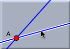
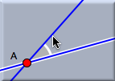
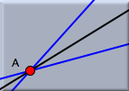

角の2等分線

角の2等分線を定義するには、2本の直線を選択しなくてはなりません。 角の2等分線としてどちらの直線が選ばれるかは次の3点によって決まります。 最初に選択した直線をクリックした位置、2番目の直線をクリックした位置、2直線の交点、の3点です。 つまりこの3点による3角形における内角の(厳密にいえば)「2直線の交点の頂点の内角」の2等分線が作図されます。 これが直観的な方法でしょう。
シンデレラ では画面上でユーザを手助けすることによりこの手続きをもう少し簡単にしています。 つまり、画面上にどちらの角が選択されるかを表示することにしたのです。 次の図を参照して下さい。
 |  |  | ||
| 最初の選択： 直線がハイライト。 選択された点が記憶 されます。 | マウスを動かす: 選択される角が 画面上に表示されます。 | 2本目の選択: 角の2等分線が 加えられます。 |
要約
2本の直線を選択して角の2等分線を作図する。注意
角の2等分線は幾何学(ユークリッド幾何学、双曲幾何学、楕円幾何学)によってその定義が異なります。 双曲幾何学では角の2等分線は複素座標を持つこともあります。(阿原)
Page last modified on Tuesday 02 of August, 2011 [12:14:40 UTC].
The original document is available at
http://doc.cinderella.de/tiki-index.php?page=Angle%20BisectorJ